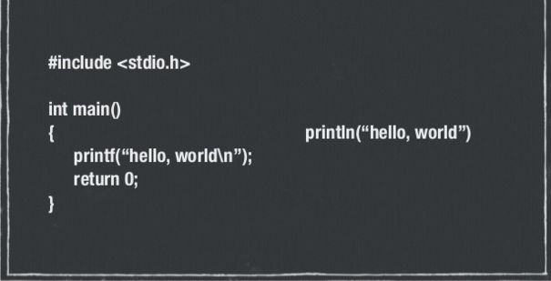

Swift
by Apple, and Michael Mattson
What is Swift?
- It's like C/Objective-C, but not pedantic and restrictive.
- Created by Apple as the flagship language for iOS, OSX, tvOS, and watchOS development.
- Is designed to minimize the work you have to do in debugging.
- Variable are initialized automatically before use.
- Memory is managed automatically.
- Nil values are managed through optionals.
Swift doesn't require semicolons!
Objective C vs Swift

Details
- Swift is type-safe. It will infer variable types from the value assigned
- var x = 16 is an int.
- var y = "Hello" is a string.
- Constants can be set with let.
- let c = 3.
- c = 1 will cause an error
- Optionals
- Swift doesn't like nil.
- So, we can use ? to make swift accept a nil value.
Functions
- Example Declaration:
- func someFunction(s:String, i: Int) -> Bool
{
... // code
}
- Functions can return other functions
Read-Eval-Print-Loop
- Also known as the REPL
- Accessible from terminal.
- Interactive version of Swift for speedy testing and debugging.
- Easiest place to run your code pre deployment